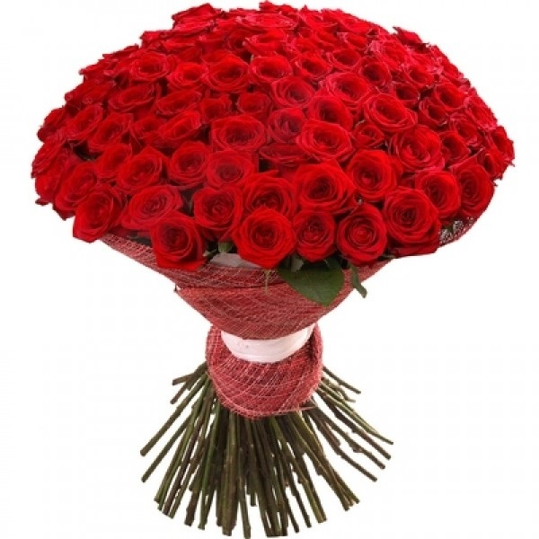

Красный цвет - цвет всего мистического, таинственного,
потустороннего. Издавна красный цвет считался цветом мудрости и власти.
У древних иудеев он был царским цветом, в православии символизировал
божественное проявление. В Древнем Риме цезари носили пурпурные тоги.
Люди с древности проявляли особое пристрастие к красному цвету.
Во многих языках одно и то же слово обозначает красный цвет и вообще
все красивое, прекрасное. В русском: красная площадь - красивая площадь;
фольклорные образы: красна девица, красно солнышко. У полинезийцев слово
«красный» является синонимом слова «возлюбленный». В Китае об искреннем,
откровенном человеке говорят «красное сердце», тогда как сердце дурного, коварного человека черно.